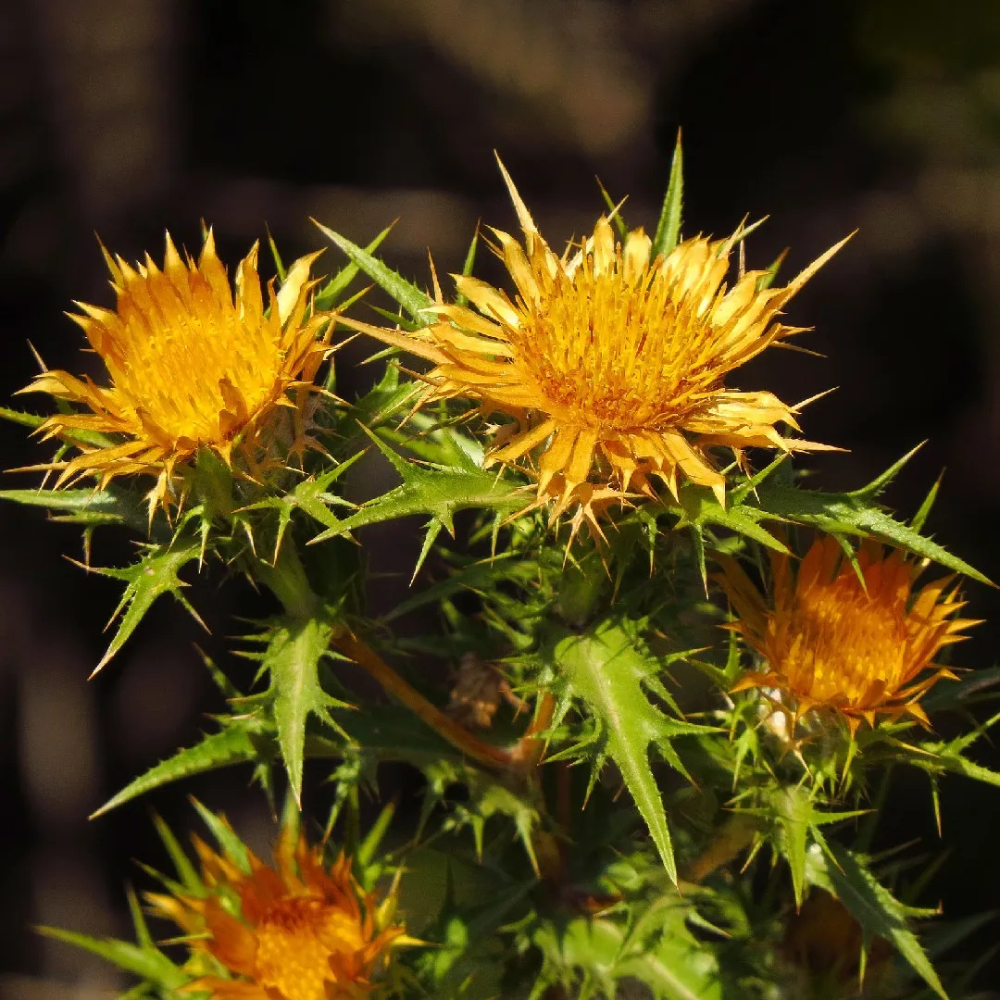

Ayuntamiento de Senés
JARDIN BOTANICO DE ESPECIES AUTOCTONAS DE SENES

Scolymus hispanicus

El cardo kuko (Scolymus hispanicus), conocido también como tagarnina o cardillo en distintas regiones, es una planta herbácea bienal característica del ecosistema mediterráneo. Se desarrolla en terrenos secos, bordes de caminos y campos cultivados, donde forma parte de la vegetación espontánea.
Presenta tallos erectos y ramificados, con hojas profundamente lobuladas y provistas de espinas, de color verde intenso. Sus flores son amarillas y se agrupan en capítulos rodeados de estructuras espinosas. Puede alcanzar entre 50 y 120 cm de altura en condiciones favorables.
El cardo kuko se distribuye por la región mediterránea, especialmente en la península ibérica, donde crece en terrenos secos, suelos removidos y zonas agrícolas. Prefiere suelos bien drenados y climas cálidos.
En la Sierra de los Filabres y en el entorno de Senés, es frecuente en campos abandonados y bordes de caminos, formando parte del paisaje vegetal típico.
El cardo kuko ha sido utilizado tradicionalmente tanto en la alimentación como en la medicina popular. Sus tallos tiernos son comestibles y se han empleado en diversos platos tradicionales, especialmente en guisos.
Además, se le atribuyen propiedades digestivas y depurativas, siendo valorado dentro del conocimiento tradicional de plantas silvestres comestibles.
El cardo kuko simboliza la resistencia y la utilidad de las plantas silvestres, al combinar un aspecto espinoso con un aprovechamiento alimenticio. Representa el conocimiento tradicional del medio rural.
Su presencia en terrenos difíciles lo asocia con la adaptación y la supervivencia.
En Senés, el cardo kuko ha sido recolectado para su consumo, especialmente cuando es joven y menos espinoso.
Según la costumbre popular tiene propiedades afrodisiacas, además se empleaba como diurético, para arenillas renales y es recomendado contra la tos, bronquitis y mucosidad. Se utilizaba como cataplasma en picaduras de escorpiones.
El cardo kuko florece en primavera y verano, produciendo flores amarillas que destacan en el paisaje y contribuyen a la biodiversidad del entorno.
A pesar de su aspecto espinoso, es una planta comestible muy apreciada en la gastronomía tradicional. Su recolección y preparación forman parte del saber popular transmitido entre generaciones.
Es una de las especies que mejor representa el aprovechamiento tradicional de plantas silvestres en el medio rural mediterráneo.